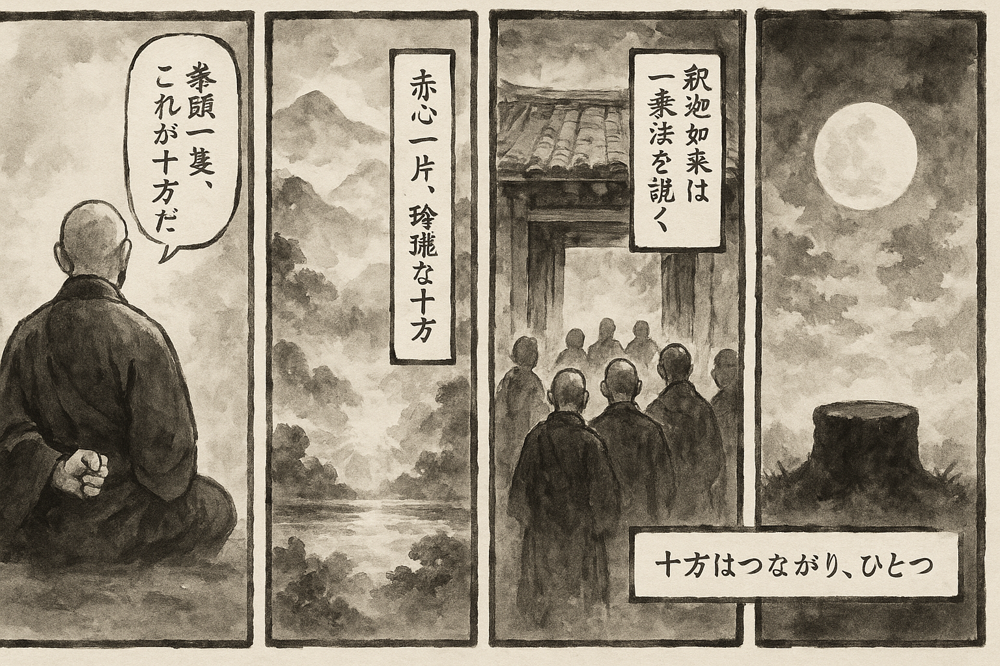

七十五巻 巻一覧
正法眼藏第55 十方
本ページの導入・語彙・深掘り・クイズは tools/regen_volume_intro_from_corpus.py が OpenAI API で生成したものです（入力は当巻冒頭原文の抜粋）。内容はモデル出力のため、重要箇所は必ず原文・教本と照合してください。
出典: https://shomonji.or.jp/zazen/doc/genzou.html
（ローカル生成の全文: 全文ページ）
この巻の位置（導入）
拳頭一隻、只箇十方なり。赤心一片、玲瓏十方なり。敲出骨裏髓了也（骨裏の髓を敲出し了れり）。
釋迦牟尼佛、告大衆言、十方佛土中、唯有一乘法。いはゆる十方は、佛土を把來してこれをなせり。
語彙の足場
- 十方：仏教において、全ての方向や空間を指し、仏土や仏の存在を表す概念。
- 釋迦牟尼佛：仏教の開祖であり、悟りを開いた者として知られる。
- 佛土：仏が存在する場所、または仏の教えが通じる世界を指す。
- 一乘法：仏教における根本的な教えを指し、すべての生きとし生けるものが到達可能な真理。
- 沙門：出家して修行する者、特に仏教の僧侶を指す。
本文（冒頭・抜粋）
出典はリポジトリ内 doc/正法眼蔵.txt です。原文の参照元: https://shomonji.or.jp/zazen/doc/genzou.html
拳頭一隻、只箇十方なり。赤心一片、玲瓏十方なり。敲出骨裏髓了也（骨裏の髓を敲出し了れり）。
釋迦牟尼佛、告大衆言、十方佛土中、唯有一乘法。
いはゆる十方は、佛土を把來してこれをなせり。このゆゑに、佛土を拈來せざれば十方いまだあらざるなり、佛土なるゆゑに以佛爲主（佛を以て主と爲す）なり。この裟婆國土は、釋迦牟尼佛土なるがごとし。この裟婆世界を擧拈して、八兩半斤をあきらかに記して、十方佛土の七尺八尺なることを參學すべし。
この十方は、一方にいり一佛にいる、このゆゑに現十方せり。十方一方、是方自方、今方なるがゆゑに眼睛方なり、拳頭方なり、露柱方なり、燈籠方なり。かくのごとくの十方佛土の十方佛、いまだ大小あらず、淨穢あらず。このゆゑに十方の唯佛與佛、あひ稱揚讃歎するなり。さらにあひ誹謗してその長短好惡をとくを轉法輪とし、説法とせず。諸佛および佛子として、助發問訊するなり。
佛祖の法を稟受するには、かくのごとく參學するなり。外道魔儻のごとく是非毀辱することあらざるなり。いま眞丹國につたはれる佛經を披閲して、一化の始終を覰見するに、釋迦牟尼佛いまだかつて他方の諸佛それ劣なりととかず、他方の諸佛それ勝なりととかず。また他方の諸佛は諸佛にあらずととかず。おほよそ一代の説教にすべてみえざるところは、諸佛のあひ是非する佛語なり。他方の諸佛また釋迦牟尼佛を是非したてまつる佛語つたはれず。このゆゑに、
釋迦牟尼佛、告大衆言、唯我知是相、十方佛亦然（唯だ我れのみ是の相を知る、十方佛も亦た然り）。
しるべし、唯我知是相の相は、打圓相なり。圓相は遮竿得恁麼長、那竿得恁麼短なり。十方佛道は、唯我知是相、釋迦牟尼佛亦然の説著なり。唯我證是相、自方佛亦然なり。我相、知相、是相、一切相、十方相、裟婆國土相、釋迦牟尼佛相なり。
この宗旨は、これ佛經なり。諸佛ならびに國土は兩頭にあらず。有情にあらず無情にあらず、迷悟にあらず、善惡無記等にあらず。淨にあらず穢にあらず、成にあらず住にあらず、壞にあらず空にあらず、常にあらず無常にあらず、有にあらず無にあらず、自にあらず。離四句なり、絶百非なり。ただこれ十方なるのみなり、佛土なるのみなり。しかあれば、十方は有頭無尾漢なるのみなり。
長沙景岑禪師、告大衆言、盡十方界、是沙門壹隻眼。
いまいふところは、瞿曇沙門眼の壹隻なり。瞿曇沙門眼は、吾有正法眼藏なり、阿誰に附囑するとも瞿曇沙門眼なり。盡十方界の角角尖尖、瞿曇の眼處なり。この盡十方界は、沙門眼のなかの壹隻なり。これより向上に如許多眼あり。
盡十方界、是沙門家常語。
家常は尋常なり。日本國の俗のことばには、よのつねといふ。しかあるに、沙門家のよのつねの言語はこれ盡十方界なり。言端語端なり。家常語は盡十方界なるがゆゑに、盡十方界は家常語なる道理、あきらかに參學すべし。この十方無盡なるゆゑに盡十方なり。家常にこの語をもちゐるなり。かの索馬索鹽、索水索器のごとし。奉水奉器、奉鹽奉馬のごとし。たれかしらん、沒量大人この語脈裏に轉身轉腦することを。語脈裏に轉語するなり。海口山舌、言端語直の家常なり。しかあれば、掩口し掩耳する、十方の眞箇是なり。
盡十方界、沙門全身。
一手指天是天、一手指地是地。雖然如是、天上天下唯我獨尊（一手は天を指す是れ天、一手は地を指す是れ地。然も是の如くなりと雖も、天上天下唯我獨尊なり）。
これ沙門全身なる十方盡界なり。頂𩕳、眼睛、鼻孔、皮肉骨髓の箇箇、みな透脱盡十方の沙門身なり。盡十方を動著せず、かくのごとくなり。擬議量をまたず、盡十方界沙門身を拈來して、見盡十方界沙門身するなり。
盡十方界、是自己光明。
自己とは、父母未生已前の鼻孔なり。鼻孔あやまりて自己の手裏にあるを盡十方界といふ。しかあるに、自己現成して現成公案なり、開殿見佛なり。しかあれども、眼睛被別人換却木槵子了也（眼睛別人に木槵子を換却せられ了りぬ）。しかあれども、劈面來、大家相見することをうべし。さらに呼則易、遣則難（呼ぶことは則ち易く、遣ることは則ち難し）なりといへども、喚得廻頭、自廻頭、堪作何用。便著者漢廻頭（喚んで廻頭することを得ば、自ら廻頭す。何の用を可作すべき。便ち著者漢の廻頭）なり。飯待喫人、衣待著人（飯は人の喫はんことを待ち、衣は人の著んことを待つ）のとき、模索不著なるがごとくなりとも、可惜許、曾與儞三十棒（曾て儞に三十棒を與ふ）。
盡十方界、在自己光明裏。
眼皮一枚、これを自己の光明とす。忽然として打綻するを在裏とす。見由在眼を盡十方界といふ。しかもかくのごとくなりといへども、同牀眠知被穿（牀を同じうして眠れば被の穿げたることを知る）。
盡十方界、無一人不自己（一人として自己ならざる無し）。
しかあればすなはち、箇箇の作家、箇箇の拳頭、ひとりの十方としても自己にあらざるなし。自己なるがゆゑに、自自己己みなこれ十方なり。自自己己の十方、したしく十方を罣礙するなり。自自己己の命脈、ともに自己の手裏にあるがゆゑに、還他本分草料（他に本分の草料を還せ）なり。いまなにとしてか達磨眼睛、瞿曇鼻孔あらたに露柱の胎裏にある。いはく、出入也、十方十面一任なり。
玄沙院宗一大師云、盡十方界、是一顆明珠。
あきらかにしりぬ、一顆明珠はこれ盡十方界なり。神頭鬼面これを窟宅とせり、佛祖兒孫これを眼睛とせり。人家男女これを頂𩕳拳頭とせり。初心晩學これを著衣喫飯とせり。先師これを泥彈子として兄弟を打著す。しかもこれ單提の一著子なりといへども、祖宗の眼睛を抉出しきたれり。抉出するとき、祖宗ともに壹隻手をいだす。さらに眼睛裏放光するのみなり。
乾峰［所名也］和尚因僧問、十方薄伽梵、一路涅槃門。未審、路頭在什麼處（十方薄伽梵、一路涅槃門。未審、路頭什麼處にか在る）。
乾峰以拄杖畫一畫云（乾峰、拄杖を以て畫すること一畫して云く）、在遮裏。
いはゆる在遮裏は十方なり。薄伽梵とは拄杖なり。拄杖とは在遮裏なり。一路は十方なり。しかあれども、瞿曇の鼻孔裏に拄杖をかくすことなかれ。拄杖の鼻孔に拄杖を撞著することなかれ。しかもかくのごとくなりとも、乾峰老漢すでに十方薄伽梵、一路涅槃門を料理すると認ずることなかれ。ただ在遮裏と道著するのみなり。在遮裏はなきにあらず、乾峰老漢、はじめより拄杖に瞞ぜられざらんよし。
おほよそ活鼻孔を十方と參學するのみなり。
正法眼藏十方第五十五
爾時寛元元年癸卯十一月十三日在日本國越州吉峰精舍示衆
寛元三年乙巳窮冬廿四日在越州大佛寺侍司書寫 懷弉
図解（4コマ・AI生成）
教義の根拠は本文・出典に従い、漫画は比喩の補助に留めてください。

深掘り（読解の手掛かり）
- 十方は仏土を基にしているため、仏の存在が重要である。
- 釋迦牟尼佛は他の仏を劣っているとは言わず、すべての仏を平等に見る。
- 十方は有情無情、善悪を超えた存在である。
確認（形成評価）
各設問の下の「採点」で正誤を表示します（ブラウザ内のみ。ログは送りません）。